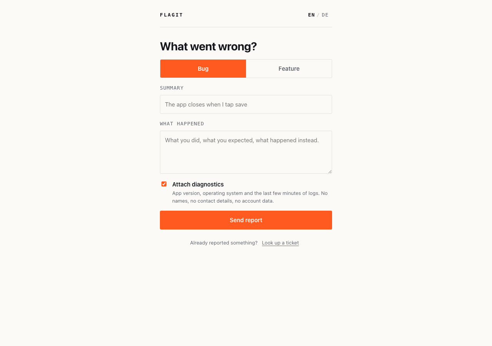
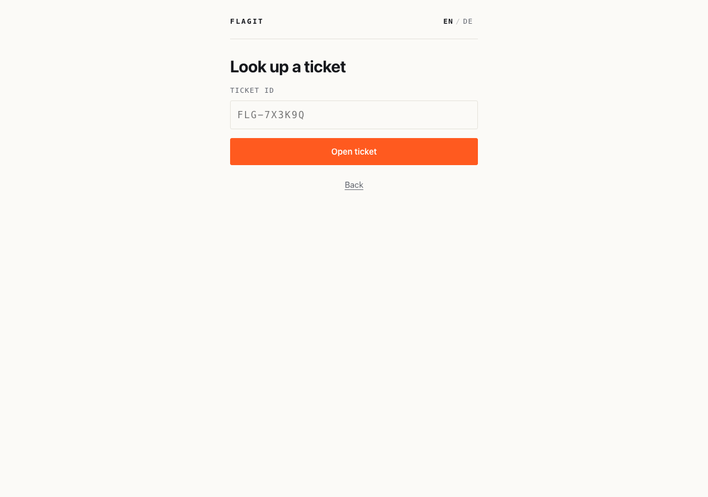
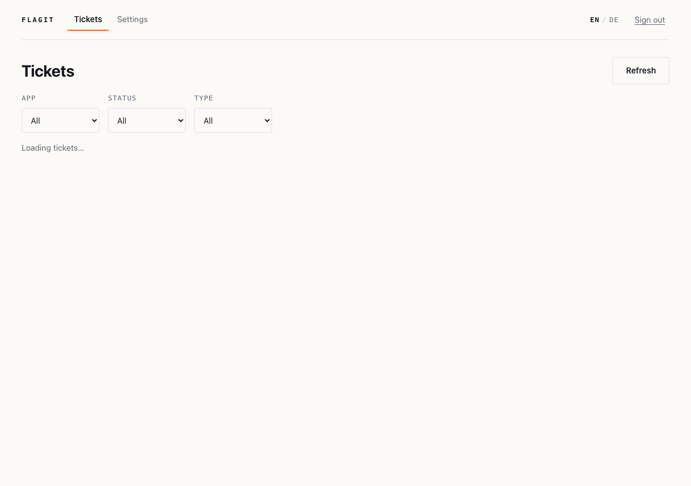

Ticket creation
Bug reports and feature requests filed from a web overlay you drop into any app or
webview. Each one gets an ID like FLG-7X3K9Q.
Flagit is an in-app ticket system you run yourself. People report bugs and feature requests from inside your app, get an ID back, and follow the ticket with it. New tickets go to Hermes, which dispatches Claude Code to investigate and fix them. No accounts, no email addresses, no contact details — just a ticket ID.
One binary with the frontend embedded, one SQLite file, two ports. The public port serves apps; the internal port serves you and Hermes.
Bug reports and feature requests filed from a web overlay you drop into any app or
webview. Each one gets an ID like FLG-7X3K9Q.
A random token in the reporter's browser stands in for a login. Only its SHA-256 hash reaches the server, and only the device that filed a ticket can open it.
App version, operating system, platform and a ring buffer of recent logs — attached by default, switched off with one checkbox, never containing contact details.
Reporter and agent converse on the ticket. Replies are pulled with the ticket ID, so Flagit never needs a way to reach anyone.
New tickets are POSTed to a webhook with exponential backoff and up to three
attempts. Hermes can also poll /internal/poll?since= and miss nothing.
Filter, open, reply, change status. Per-app and global auto-processing switches, and a mass update for the release sweep.
Agents record hash, branch and message against the ticket. Developer-facing only — the public API never returns commits.
Both interfaces auto-detect the locale and carry a manual toggle. Both languages are written, not machine-translated.
The public API and the web overlay sit on :8080 and are the only thing
your apps reach. The internal API, the admin dashboard and everything Hermes touches
sit on :3000 — keep that port on a private network.
open → in-progress → resolved → shipped → closed. A ticket may also jump
straight to closed from any stage, or step back one stage when work
reopens or a release is rolled back. Anything else is rejected unless the caller sends
"force": true.
Filed, waiting to be picked up.
Someone — or an agent — is working on it.
Fixed in the code, not yet in a release.
Out in the world, with the version recorded.
No further work planned.
The overlay is sized for a webview panel; the dashboard expects a desktop. Both ship inside the same binary and share one design language.




Docker Compose builds the frontend, compiles the binary and starts both ports. The admin key is generated on first start and printed once.
git clone https://github.com/radaiko/flagit
cd flagit
docker compose up -d
# The admin key is printed exactly once, on first start:
docker compose logs flagit | grep -A2 "generated one"
Then open http://127.0.0.1:3000/internal/admin and sign in with that key.
The overlay is served from http://127.0.0.1:8080/. Full instructions,
including Coolify and Tailscale, are in the
deployment guide.
make web builds the Svelte
frontend and stages it for embedding, make build produces
bin/flagit, and make dev runs the server against a Vite dev
server for frontend work.
The overlay carries a ? in its header explaining how to file a report, what the ticket ID is for, how replies work and what the device token is. The dashboard has a Help tab covering the status workflow, per-app settings, mass operations, Hermes and commit tracking. Both are available in German and English.